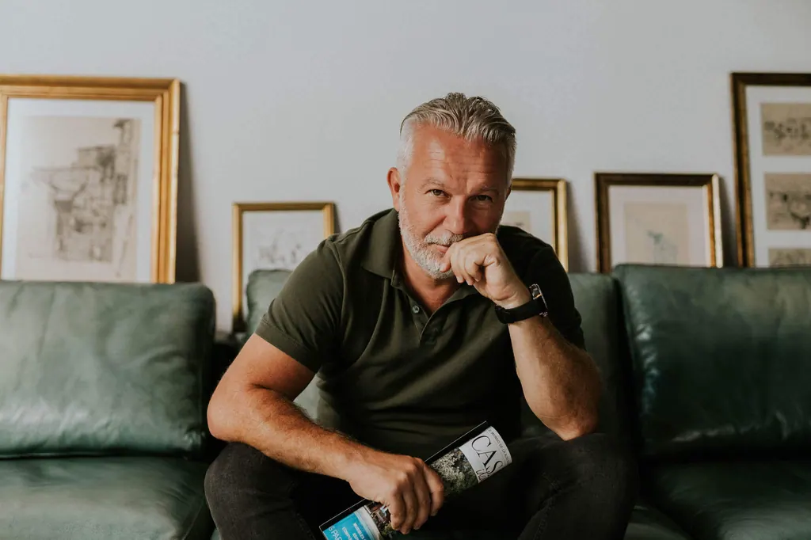
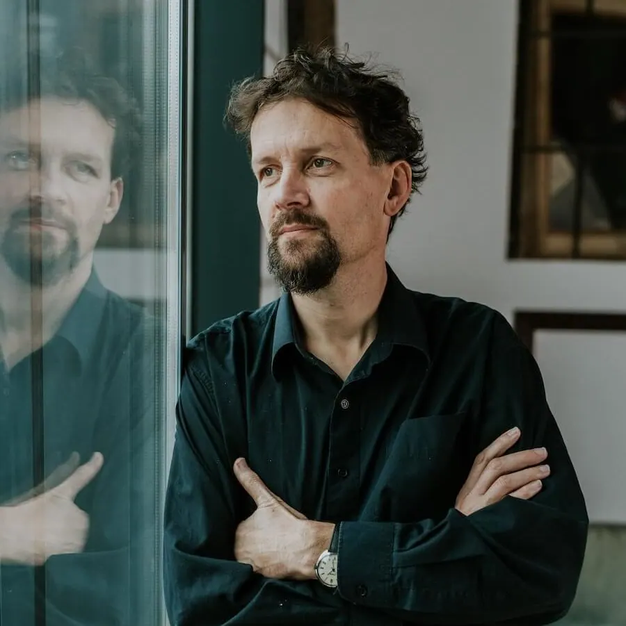
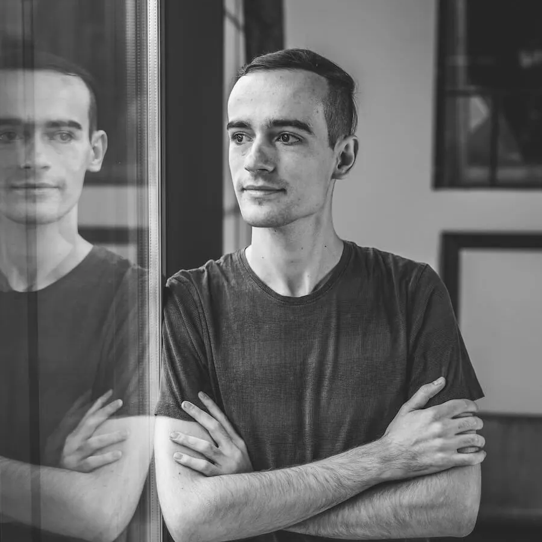
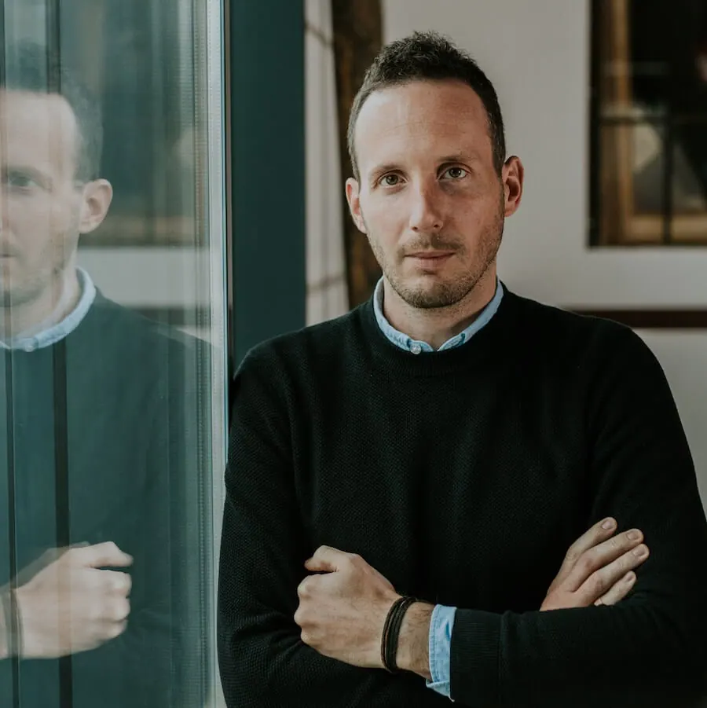
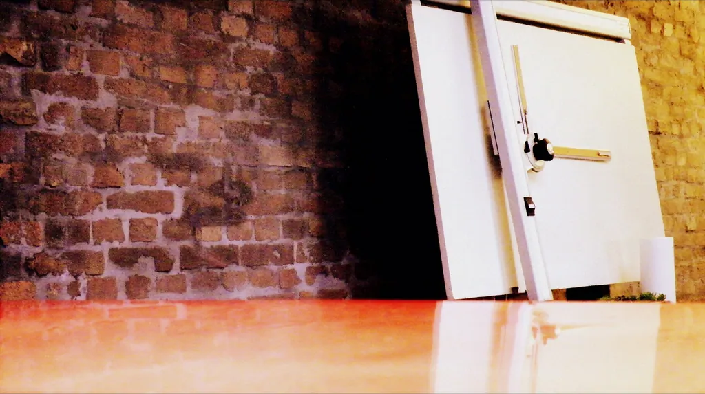
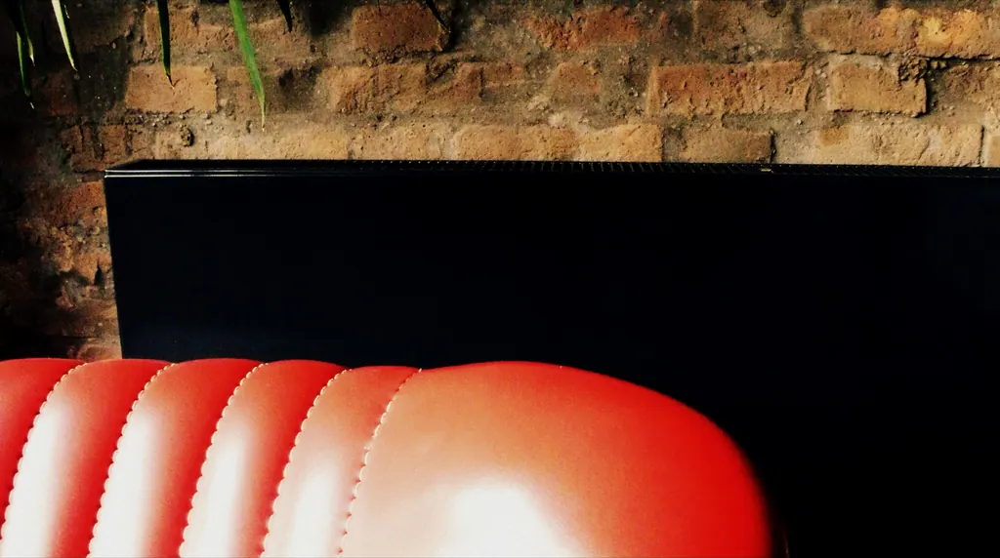
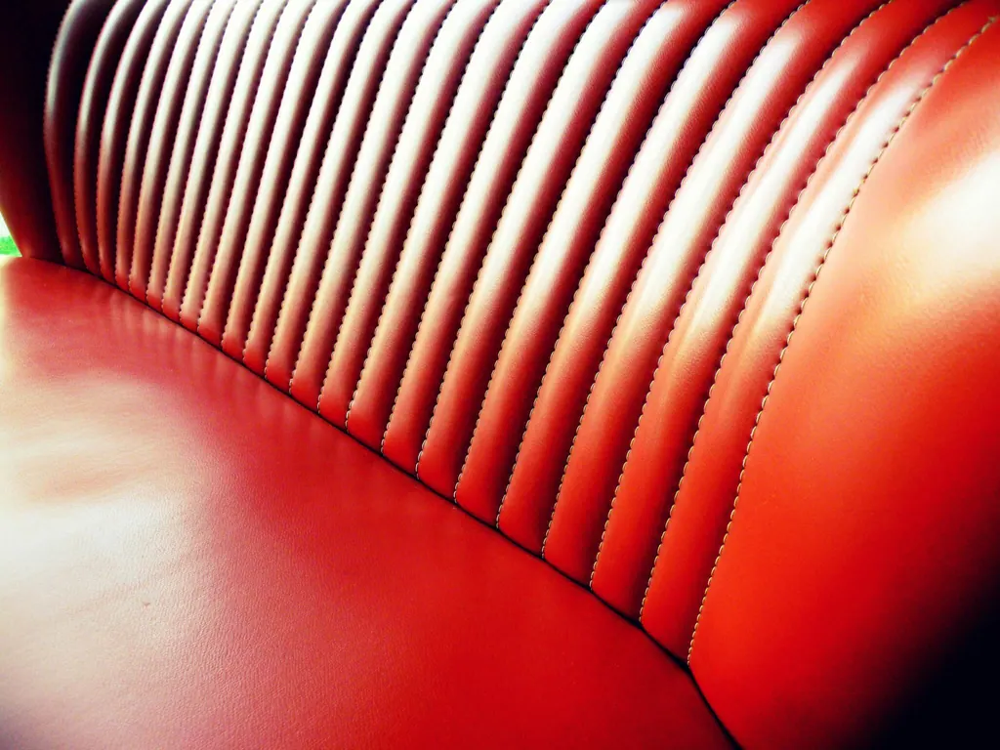
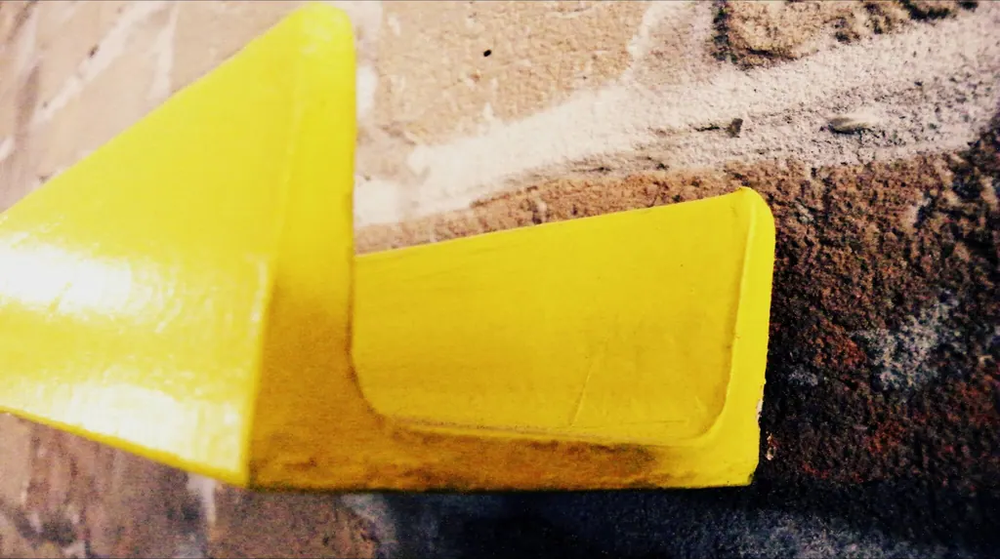
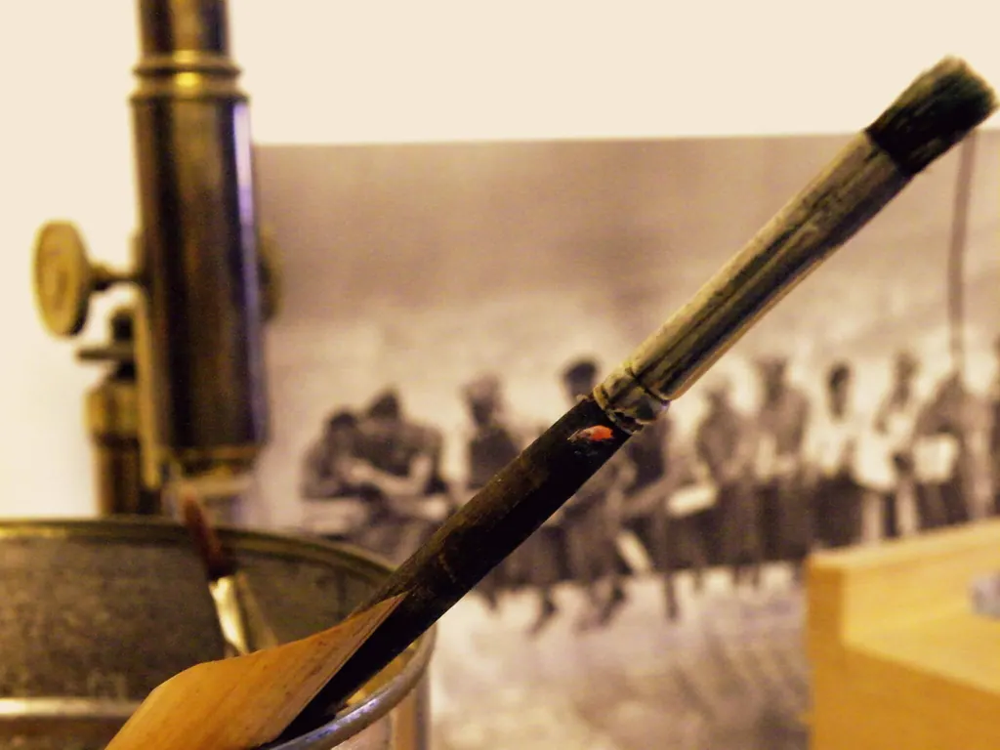
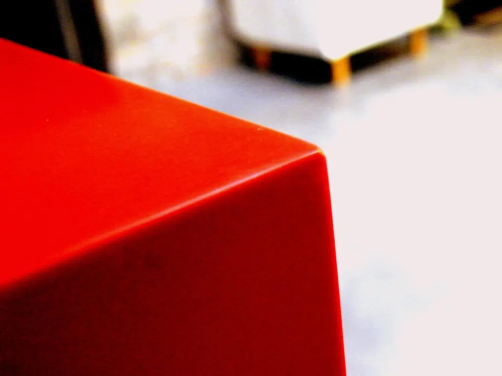

Kertvéllesy Építész Iroda
Az iroda
Kertvéllesy Gábor, építész
Üdvözlöm. Kertvéllesy Gábor vagyok, építész. Született építész… Lételemem az életérzés, ahogy mondani szoktam, életérzést adok-veszek. Leginkább adok.
Az építészet egy lehetőség a minőségi környezet megteremtéséhez. Az építész pedig életérzést kell létrehozzon. Ő az esztétika és a funkcionalitás együttes karmestere, aki vezeti Önt.

Videó megnyitása a YouTube-onA cégről
A Kertvéllesy Ingatlan Kft. 2005-ben jött létre Pécsett. Tervezési feladataink között egyaránt találhatóak egyszerűbb és luxus színvonalú lakóépületek, társasházak. Tervezünk középületeket és ipari épületeket egyaránt, számos műemléki és régi ipari épület részleges vagy teljes felújításával is foglalkozunk.
Célunk szakmailag és emberileg is egy magas színvonalú, értéket teremtő iroda működtetése.
- Cégnév
- Kertvéllesy Ingatlan Kft.
- Alapítva
- 2005, Pécs
- Iroda
- 7622 Pécs, Siklósi út 2.
A csapat
Irodavezetés
- Pomaházi-Lázár Dávidoperatív vezetőirodavezeto@kertvellesy.hu
- Király Andreairodavezetőtitkarsag@kertvellesy.hu
Az építészek
- Ripszám Róbertépítészmérnökrr@kertvellesy.hu

Kiss Istvánépítészmérnökki@kertvellesy.hu
Bajnai Benceépítész munkatársbb@kertvellesy.hu
- Oluboyo Grace Oluwaseyiépítész szerkesztőog@kertvellesy.hu
- Szloboda Tamásépítészmérnökszt@kertvellesy.hu
- Molnár Tamásépítészmérnökmt@kertvellesy.hu
- Sásdi Boglárkaépítészmérnök gyakornoksb@kertvellesy.hu
A belsőépítészek
- Varga Zsuzsannaépítészmérnök, belsőépítészvzs@moodinterior.hu
- Varga Dórabelsőépítész–
A projektmenedzsment

Jakab Bálintműszaki projektmérnökjakab.balint@ypc.hu

Az iroda terei







